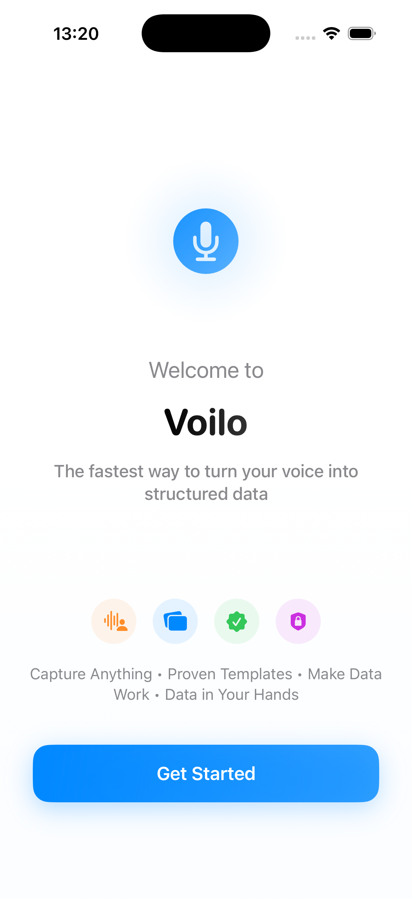
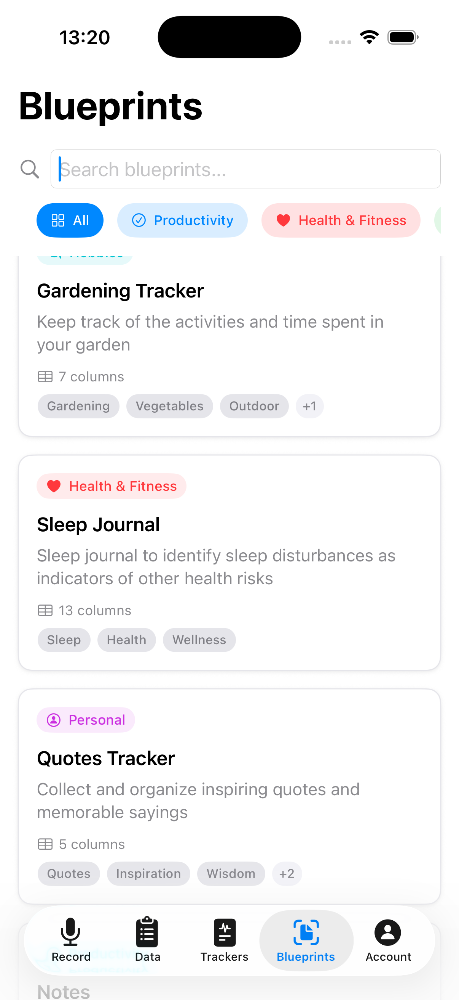
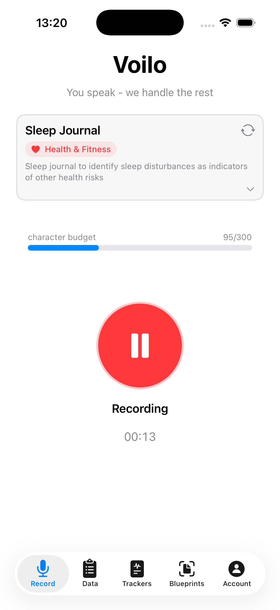
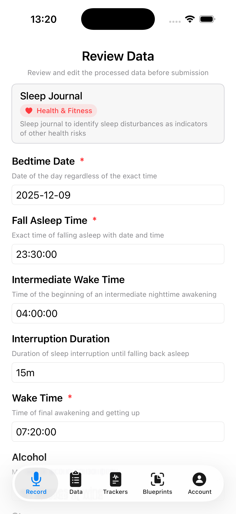
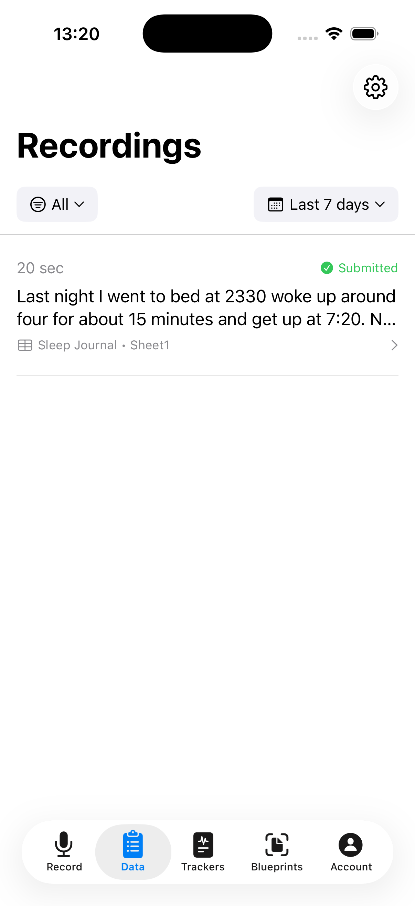
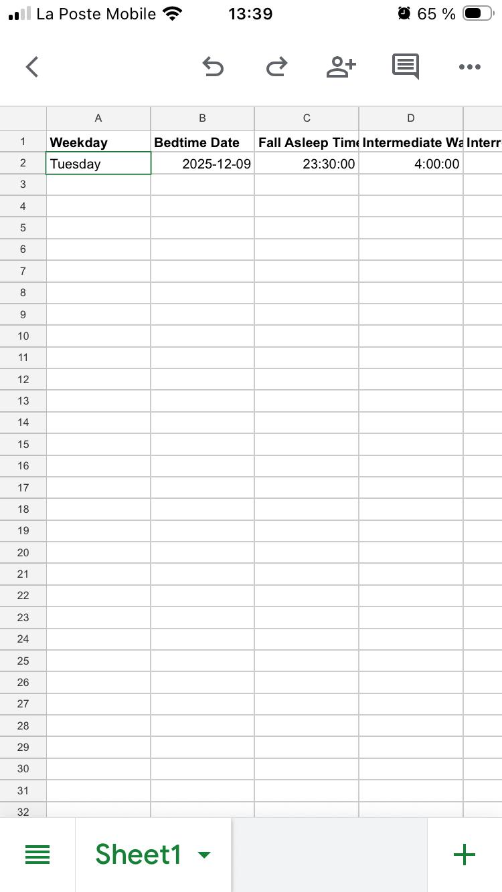

How it works
Voilo turns your spoken updates into structured entries in Google Sheets. Simply record, speak naturally, and your data is parsed, validated, and added to the right tracker — hands-free and instantly.
1
Open the app
On your iPhone.
2
Speak naturally
"Last night I went to bed at 23:30 and got up at 7:20"
3
It's logged
Voilo transforms your message into a structured entry in your sheet.
Example entry
"Last night I went to bed at 23:30, woke up around 4 for about 15 minutes, and got up at 7:20. No stress, but had 2 glasses of wine."
Open the app
Choose your tracker
Record your entry
Review the data
Access your entries
Data in Google Sheets
For whom?
- Productivity enthusiasts
- Self-trackers
- Fitness & health trackers
- Lifelong learners
- Personal diarists
- Creative idea collectors
Why productivity enthusiasts love Voilo
- 🧠 Track anything with total flexibility — your data model lives in Google Sheets.
- 🎤 Natural voice input — no tapping through menus, no friction, no forgetting entries.
- 📈 Perfect for habits, mood, workouts, sleep, meals, experiments.
- 📱 Works on iPhone — fast, one-handed voice capture.
- 📊 Your data stays yours, stored in Google Sheets — full control, no vendor lock-in.
Frequently Asked Questions
Is my data private?
Yes. Everything is stored only in your Google Sheet. Voilo never sees your documents.
Do I have to type anything?
No. You speak, Voilo organizes.
Do I need to be tech-savvy?
Not at all. If you can dictate a message, you can use Voilo.